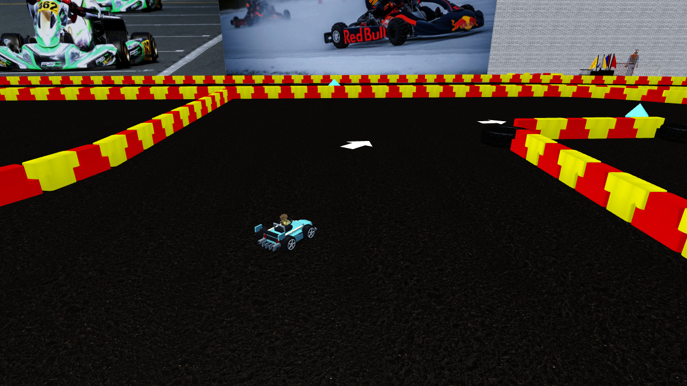
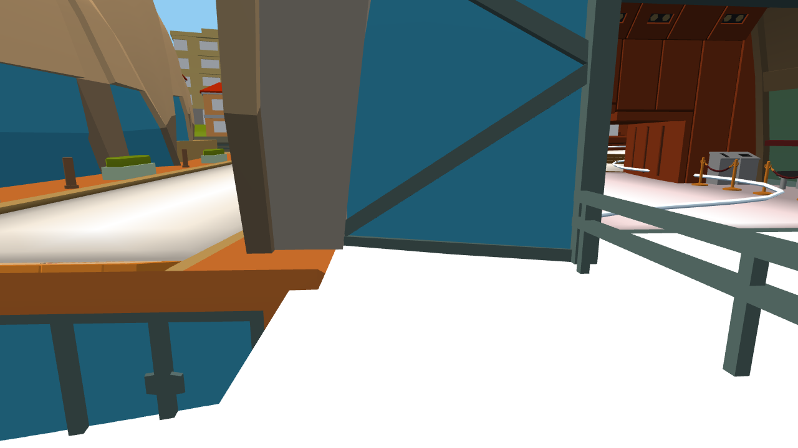
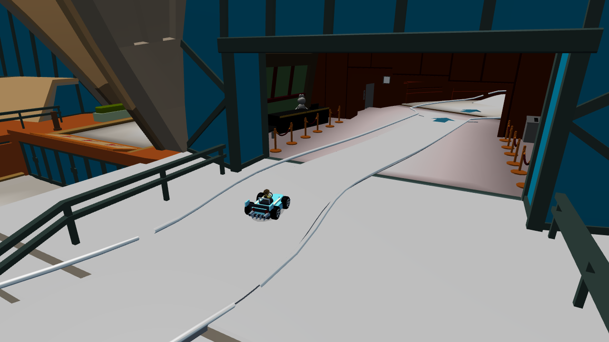
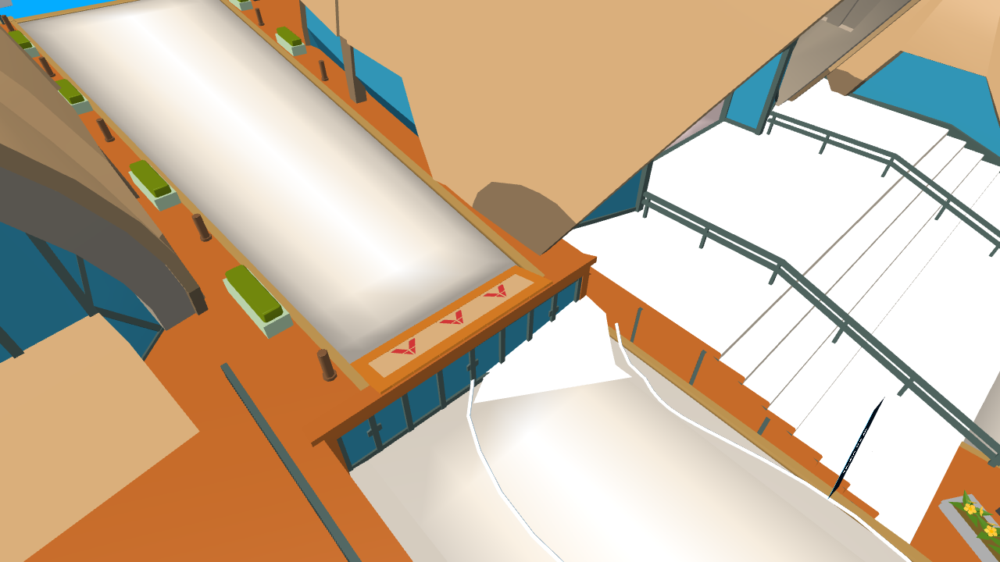
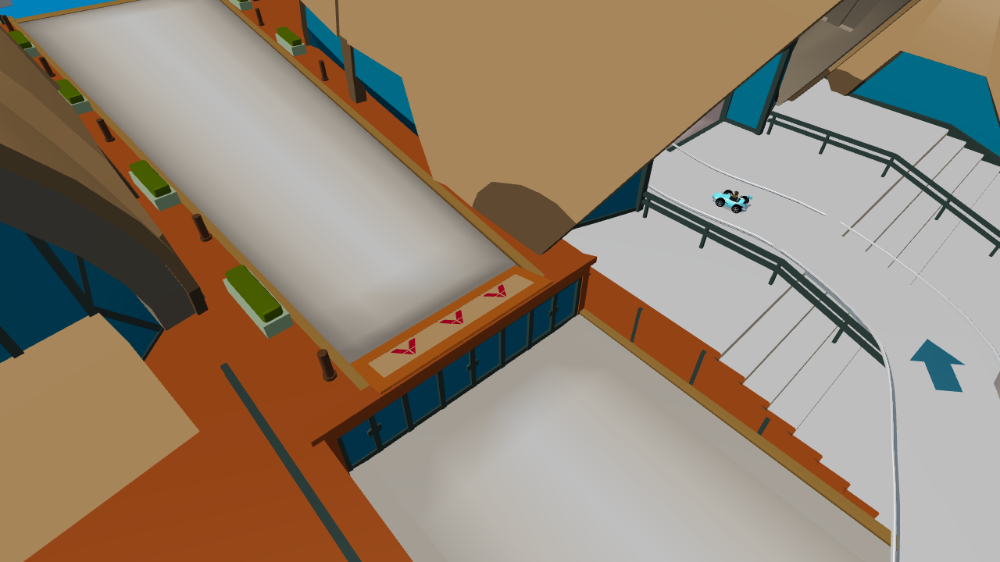

PARTY GAME · RIBALTATI
Passaggi aperti, ostacoli visibili
Correzioni mirate di Primo Karting e Sydney Sprint. Le immagini mostrano i punti individuati nell’analisi: il punto esatto segnalato inizialmente non era noto.
Report e limiti delle verifiche · Gara Primo · Gara Sydney · Build
Primo Karting · asfalto libero e direzione chiara
Il vecchio limite laterale bloccava un passaggio senza un ostacolo visibile. Ora le collisioni seguono la geometria reale. Le frecce dipinte indicano il percorso; i box esclusi dalla gara hanno una chiusura visibile.
Prima. Caso candidato a s=758, lato destro: l’asfalto sembra libero ma il limite della spline blocca il kart.
Dopo. Stessa zona, passaggio libero e segnaletica dipinta. La prova fisica verifica il superamento del vecchio limite.
Sydney · accesso all’Opera House
L’accesso passa intorno alla facciata chiusa e raggiunge il varco reale tramite un raccordo visibile. La gara di tre giri utilizza le stesse pareti fisiche per bot e giocatori.

Prima. Il tracciato punta contro l’angolo chiuso della facciata.
Dopo. Accesso al varco reale, raccordo percorribile e frecce in contrasto con la pavimentazione.Sydney · raccordo e superfici
Stessa camera prima e dopo: il vecchio raccordo attraversava la facciata. La luce finale conserva le differenze sulle superfici chiare. Le facce duplicate sono state rimosse senza nascondere parti della città.

Prima. Collegamento diagonale errato e alte luci bruciate.
Dopo. Collegamento esterno e tono delle superfici più leggibile.Verifiche mirate
Primo: 3 giri, 12 checkpoint. Sydney: 3 giri, 12 checkpoint, 3 decolli/atterraggi, zero cadute o contatti sulle traiettorie provate. Catalogo delle quattro piste e split screen a 5 visuali verificati. Sono prove automatiche con input ordinari e controlli visivi del renderer; resta utile una prova umana con telefono o gamepad.
Collisioni e selezione · File preservati · Smoke test a cinque visuali
Anteprima locale. Nessun commit, push o deploy.